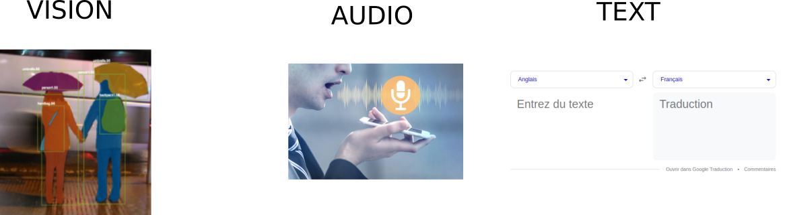
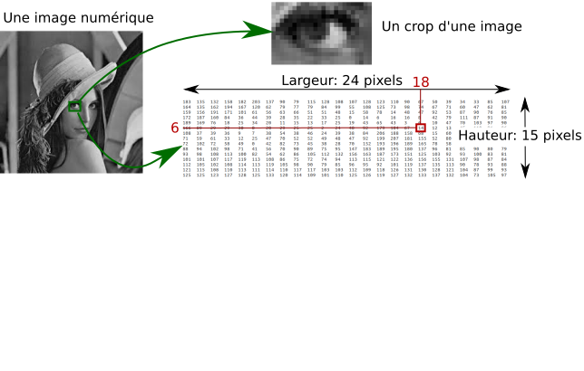
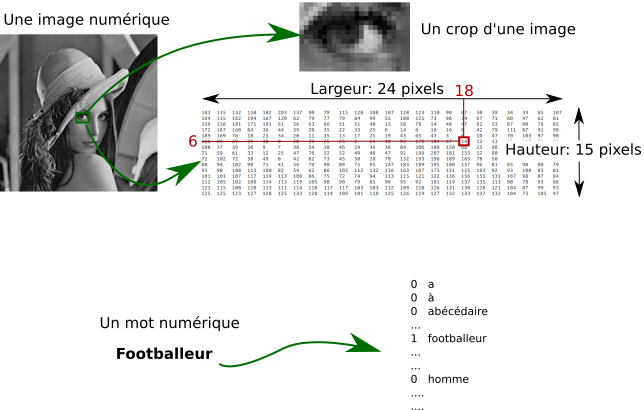
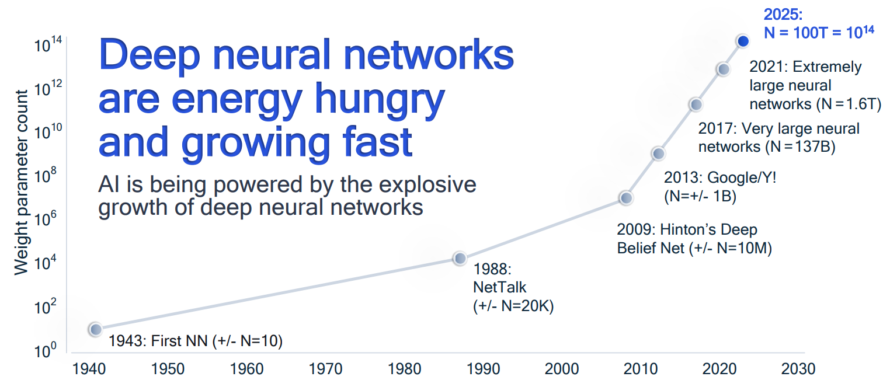

Que peut-on faire avec l'IA aujourd'hui ?
Qui sommes-nous ?
L'Association IA PAU rassemble dans la bonne humeur chercheurs, enseignants, étudiants et entrepreneurs autour de projets collaboratifs.

- Paul Gay - Ingénieur de recherche - CNRS-UPPA
- Yannick LeNir - Enseignant Chercheur - Cy-tech
Sondage
Quel sujet préférez-vous ?- 1 : Ouvrir le capot et inspecter le moteur de l'IA
- 2 : Quand utiliser une IA et combien ça coûte ?
- 3 : Conséquences sociétales, environnemental et aspect législatif
L'IA c'est quoi ?
- Ce n'est pas très bien défini
- Écriture de règles
- Aptitude à apprendre sans programmation explicite
- Extraire des connaissances à partir de données
- L'IA (forte), ça n'existe pas
Une définition :
Transformer des données (des chiffres) jusqu'à un résultat utile (K. Smaili)Pourquoi maintenant ?
Alan Turing : what we want is a machine that learns from experience- Plus de données et de puissance de calcul (GPU)
- Plus d'outils (open source)
Que sait faire l'IA ?
Transformer des données (des chiffres) jusqu'à un résultat utile
Par domaine : administration, relation client, média, médecine, cinéma, maintenance, robotique, finance,...
Par tâche : classer, recommender, détecter, prédire, générer, résumer


Comment transformer des données jusqu'à un résultat utile ?
Comment formuler une tâche ?
Par ex: différencier les chiens et les chats ?
Apprendre l'IA sur une base d'apprentissage construite par un humain
Comment apprendre une tâche ?
- Construire un modèle qui calcule (mal) deux chiffres
Comment apprendre une tâche ?
- Construire un modèle qui calcule (mal) deux chiffres
- Comparer ce calcul à la vérité annotée
Comment apprendre une tâche ?
- Construire un modèle qui calcule (mal) deux chiffres
- Comparer ce calcul à la vérité annotée
- Construire un objectif pour la machine
Comment apprendre une tâche ?
- Construire un modèle qui calcule (mal) deux chiffres
- Comparer ce calcul à la vérité annotée
- Construire un objectif pour la machine
- Optimiser légérement la boite noire pour rapprocher le résultat de l'annotation
Des milliards de petites modifications rapprochent le résultat de l'annotation humaine
Comment générer des mots ?
Calculer un score pour chaque mot du dictionnaire
et afficher un mot probable
Antoine XXXXX est un footballeur
Sur l'ensemble d'internet, avec (peut-être) 384 GPUs pendant 3.5 mois
Et une correction manuelle pour construire l'agent conversationnel ChatGPT
- Données structurées ou formatées
- Problème résumable par les données disponibles
- Exemple texte : classer des documents par langue
- Exemple image : détection de mouvement
- IA légère <= 10Mo
- Quelques jours d'implémentation sur un portable
- Modèles pré-entraînés existant pour votre tâche
- Transcription => Whisper
- Détection d'objets courants => Yolo
- Génération de texte => on connait :)
- Quelques jours d'implémentation sur un portable ou GPUs
- GPUs entre 3000 et 20000 euros
- Traduction vers une langue peu dotée, compréhension fine de documents métiers
- Adaptation d'un gros modèle : sur cloud ou GPUs
- Préparer des données : coûts en temps ingénieur
- Entre quelques jours et quelques mois ou années ?
- Cas de la génération
- Taille du contexte
- Absence de source
- Hallucinations
- Dépendance cloud ou GPUs et matériel important + savoir faire technique
- Prompt Engineering (art, habitude, savoir-faire, apprendre le comportement d'une machine ? )
- Biais difficulté d'imposer une contrainte
- Mauvaise estimation de la confiance du résultat
- Interprétabilité
Impact Sociétal
Nous avons vu que ces modèles comportent des biais contenus dans les données- Les chiens dans la neige sont des loups
- "Banlieue" est un mot mal connoté
Impact environnemental
- Impact carbone du numérique ~= domaine de l'aviation
- Des milliards d'appareils connectées
- Énergie, ressources minières, éco-toxicité et empreinte en eau
- Et des effets rebonds...
Aspect législatif
IA Act : Entrée en vigueur de 2025 à 2027- IA prohibées : Notation sociales, police prédictive, manipulation du comportement humain
- IA à haut risque : éducation, accès aux services publics, migration
- IA à risque modérée : Obligations de transparence : Chatbot, deepfake,...
Mauvaise Interprétabilité => Difficile d'exercer le droit
La tech aura toujours un train d'avance
Conclusion : c'est en général correct
- Assistant et Expertise
- Recommendation
- Pré-Traiter le gros du travail (des données) avant une vérification par un humain
L'IA à Pau
Développons la communauté dans notre territoire !- Conférences thématiques
- IA & Société, Santé, Informatique Quantique
- Data challenges
- 150 étudiants de toute la France le temps d'un Hackaton